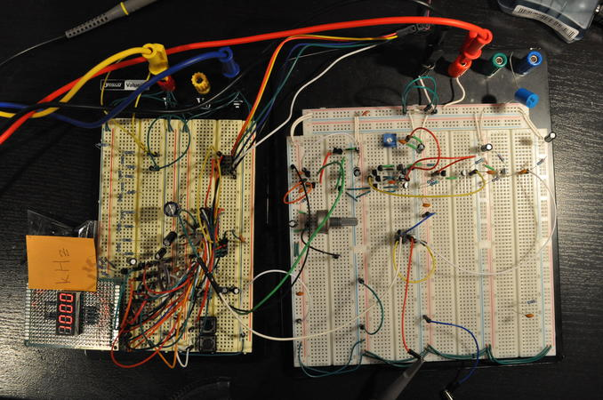
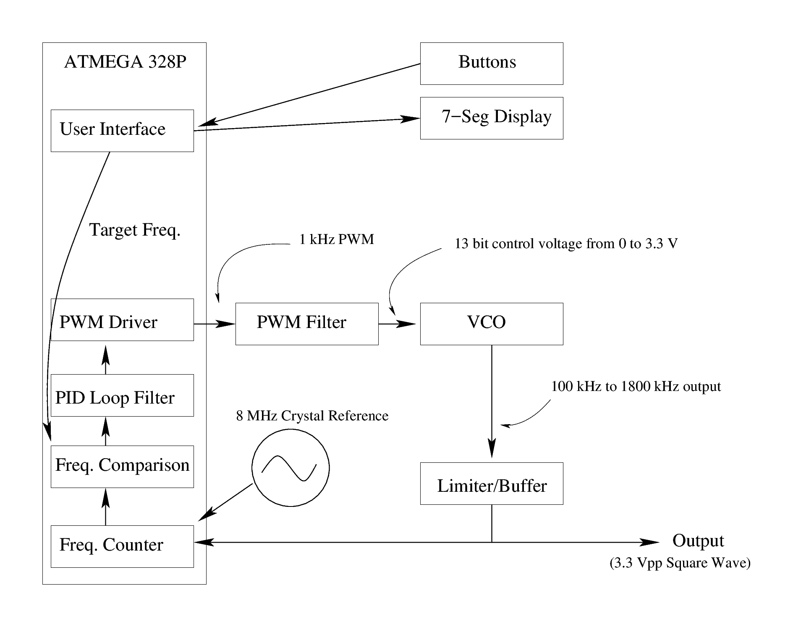
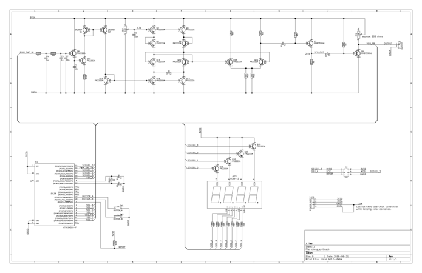
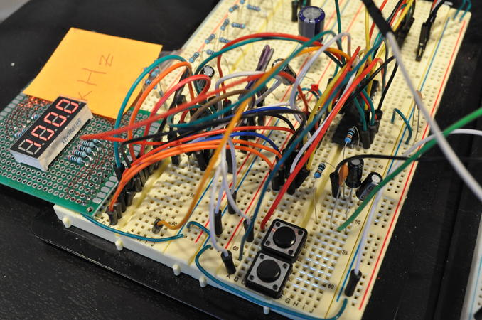
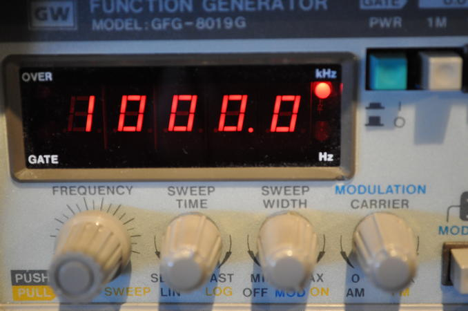
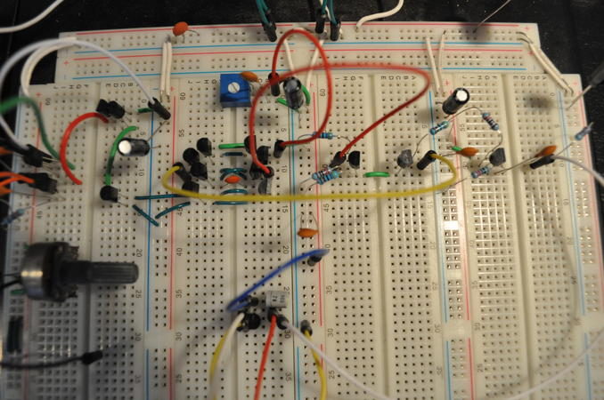
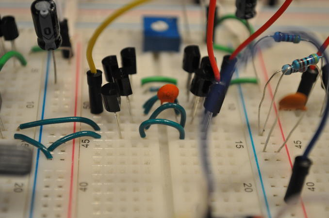
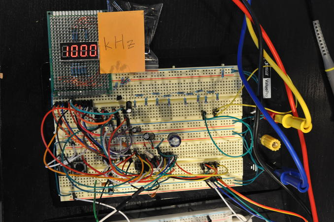

A Software Defined Frequency Synthesizer
{kind=link}

The system on a breadboardI built a cheap software defined synthesizer with an Atmel AVR microcontroller and a discrete transistor VCO. In simple words, it's just a frequency generator.
The microcontroller measures the frequency from a VCO and adjusts its DAC output voltage to the VCO, so that the VCO's output frequency matches a user-defined target. This closed loop feedback system is essentially a software defined PLL (Phased Locked Loop). The software is equivalent to a hardware PLL with a ridiculously large divider value and an extremely flabby loop filter. Since the feedback loop is very slow compared to a hardware PLL, the system is used to correct slow oscillator drift rather than synchronize the output phase to a reference, as hardware PLLs usually do.
{kind=link}

A block diagram of the synthesizer{kind=link}

A schematic of the synthesizerThe System Brief
- Frequency synthesis from 100 kHz to 1800 kHz in arbitrary intervals. The output frequency is accurate to 200 ppm.
- A quad seven-segment display shows the target frequency with a precision of 1 kHz.
- There are two buttons to increase or decrease the frequency in 1 kHz intervals. I also got carried away and added a feature where it steps in 10 kHz intervals if you hold down the button. The 1 kHz control interval was chosen to match the display's precision.
- It is a low voltage system where both the microcontroller and VCO run on 3.3 V.
- Low cost! Transistors are cheap.
- It sometimes breaks when I touch it. I should not have built it on a breadboard. I should not have built it on a breadboard. I should not have built it on a breadboard.
{kind=link}

User interface showing 1 MHz being synthesized{kind=link}

A frequency counter confirms the synthesis of 1 MHz.
The Hardware
A VCO, PWM filter, and limiter.
{kind=link}

The analog sectionThe VCO
The VCO is based on a current controlled relaxation oscillation (emitter coupled). The voltage control is not linear with frequency, so feedback is necessary to get accurate frequency control. It is difficult to buffer and amplify the output frequency from the VCO because any current drawn from this circuit will affect the frequency or even duty cycle.
{kind=link}

The VCO with timing capacitorPWM DAC Voltage Control and Filter
The VCO's voltage control input is driven by the microcontroller through a PWM DAC. The PWM ripple contributes to phase noise, so it is important to filter it out. However, it is also important to allow the PWM output to fluctuate at lower frequencies to make voltage corrections quickly.
My PWM filter is a simple double RC filter (two RC lowpass filters in series). According to SPICE, the filter crushes the 1 kHz ripple with about -100 dB of attenuation, but at the same time preserves frequency response up to 10 Hz (although with a little attenuation).
A subtlety of using an RC filter with the VCO is that the current gain, Beta, of the VCO's input transistor is not that great (it's a 2N2222). The base current of that transistor will cause a voltage drop across the RC filter. The voltage drop limits the controlled frequency range on the VCO, so a high beta transistor, Darlington pair, or an op-amp should be used.
I chose to use a PWM DAC over a GPIO R2R ladder DAC because the synthesizer is a feedback control system that requires components with monotonic outputs. In other words, a monotonic DAC is required to make small adjustments in the right direction. R2R ladders are difficult to implement reliably due to inconsistencies in GPIO drive levels and resistor accuracy. Often, the inconsistencies will not only reduce accuracy but also create instances where the output changes non-monotonically.
Signal Limiter
Following the VCO are additional gain stages and buffers. The gain stages act as a limiter to saturate the VCO's output signal against the supply rails. The GPIO pins on the microcontroller are essentially Schmitt triggers, so the feedback frequency signal needs to look somewhat like a rail-to-rail digital signal.
Microcontroller Software
The microcontroller measures the output frequency, applies a PID loop filter to the frequency error, and then adjusts the output of its PWM DAC so that the output frequency matches the target frequency.
{kind=link}

The digital section.Frequency Measurement
The microcontroller measures the feedback frequency by using a gated counting method. The input frequency drives an internal counter for a set period of time. The final counted value is divided by the time to obtain the frequency.
I used two internal counters, an interrupt driven algorithm, and a crystal system clock source to obtain a more precise measurement. One counter was driven directly by the feedback frequency from the limiter to count the edges of the signal, while a second counter was used to precisely gate the frequency counting at regular intervals.
A limitation of frequency counting is that the microcontroller's inputs are synchronized. That means that the microcontroller samples its inputs at its system's clock frequency. As a result, the microcontroller can only measure frequencies as the Nyquist rate allows. The frequency to be measured must be less than half of the system clock. The duty cycle of the measured signal should be 50% for optimal measurement, so that the sampling can capture the transitions easily.
In this circuit, I run the system at 8 MHz, so the highest frequency I would dare to measure is 3 MHz, which is a little lower than the theoretical 4 MHz.
PID Loop Filter
I used a PID loop filter to process the difference between the target frequency and the measured frequency. I also used a different filter for when the error is large and small. When the error is very large, I use a proportional and a derivative term to get to the target quickly with little overshoot. When the error is relatively small, I increase all the constants and include an integral term to eliminate steady state error. The steady state error comes from drift of the VCO.
The PID filter was manually tuned. Guessing and checking is hard.
PWM DAC Software
I used 13 bits for the PWM counter, which gives me a DAC with 13 bits of resolution. This provides an output voltage range between 3.3 V and 0 V at intervals of 400 uV. The small 400 uV from a PWM DAC sounds ridiculous, but I was looking for fine control over accuracy. The feedback loop corrects accuracy problems. Also, quantization noise from a low DAC resolution contributes to phase noise as the control system chatters across the large voltage intervals.
Higher resolution gives fine control. However, it decreases the PWM frequency, which forces you to decrease your PWM filter's cutoff, which decreases the frequency response of voltage corrections made by the software. If the PWM filter's cutoff isn't decreased accordingly with the PWM frequency, the DAC output will have a lot of ripple which will turn into phase noise at the VCO.